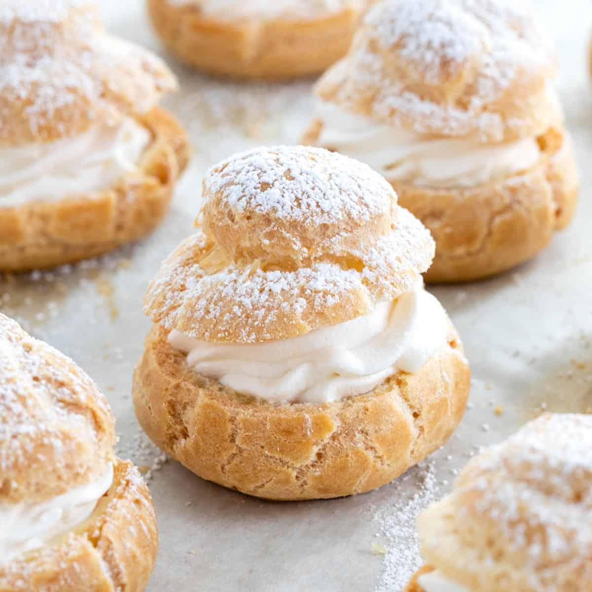

Cream-puffs

Ingredients
- 1/2 cup water
- 1/2 cup whole milk
- 1 tsp granulated sugar
- 8 tsp unsalted butter
- 1 cup flour
- 1/4 tsp salt
- 1 cup flour
- 4 eggs
- 2 cups heavy whipping cream
- 4 tsp granulated sugar
- 1 tsp vanilla extract
- 28 raspberries (optional)
- 1 tsp powdered sugar
Instructions
- Preheat oven to 425˚F. Line a rimmed baking sheet with Silpat or parchment paper.
- In a Medium saucepan, combine 1/2 cup water, 1/2 cup milk, 8 Tbsp butter, 1 tsp sugar and 1/4 tsp salt. Bring just to a boil over medium heat then remove from heat and stir in 1 cup flour all at once with a wooden spoon.
- One flour is incorporated, place back over medium heat stirring constantly for 1 1/2 to 2 minutes to release extra moisture and partially cook flour. A thin film will form on the bottom of the pan and dough will come together into a smooth ball.
- Transfer dough to a large mixing bowl and beat using an electric mixer on medium speed for 1 minute to cool mixture slightly. Add 4 eggs, 1 at a time, allowing to fully incorporate between additions. Beat another minute until dough is smooth and forms a thick ribbon when pulled up.
- Transfer the dough to a piping bag fitted with a 1/2" round tip. Pipe 28 puffs, each 1 1/2” diameter and 1/2” tall rounds. Keep them 1" apart and avoid making peaks* but if you do get peaks, wet finger tips lightly with water and smooth them out.
- Bake at 425˚F for 10 minutes in the center of the oven. Without opening oven, reduce temp to 325˚F and, bake 20-22 min longer or until golden brown on top. Transfer to wire rack to cool completely.
Return to main page